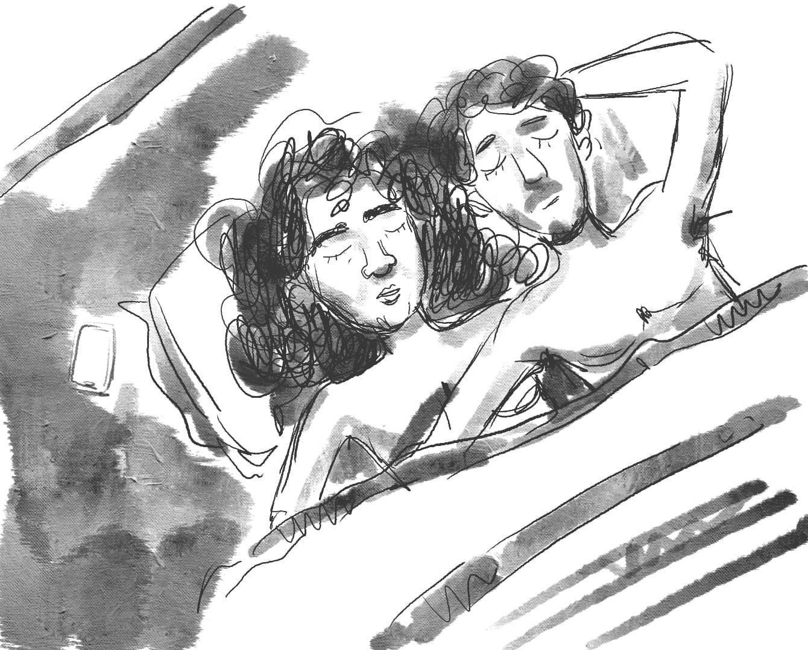

রাত যায় এলোমেলো বিছানা-চাদরে
সবাই মুচকি হাসে- "প্রেমে ও আদরে!" চাদরের ভাঁজ খুলে ছুঁতো কেউ যদি; দেখতো দীর্ঘতম প্রতারণা নদী।

এইকি শেষ !
মানুষই একমাত্র প্রানী; যে, প্রতারণা করতে জানে। সে প্রতারনা করে কিংবা প্রতারিত হয়েও পৃথিবীর বুকে চষে বেড়ায়। প্রতারকদের শাস্তি হয়না; কিংবা হয় - তবু, প্রতারকদের কোনদনিও আত্মোপলব্ধি আসেনা এবং এটাই প্রতারকদের সুখে থাকার একমাত্র চাবিকাঠি।